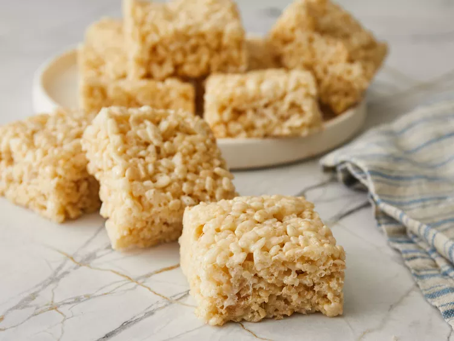

Marshmallow Rice Krispie Treats

Description
Brown Butter Rice Crispy Treats are crispy, sticky, and gooey. The Brown Butter gives these classic treats a fun, updated twist, bringing a delicious nuttiness to the sticky deliciousness! These are such a fun treat – and bonus: they’re SO easy to make!
Ingredients
- 2 sticks unsalted butter
- 1 teaspoon vanilla extract
- 2 10-ounce bags of mini marshmallows
- 1/2 teaspoon kosher salt
- 9 cups (225 grams) crispy rice cereal
Steps
- Spray a 9×13-inch baking pan with nonstick cooking spray or grease with a stick of butter.
- Melt butter in a large stainless steel pan over medium-low heat. Continue to cook the butter, swirling the pan occasionally. It should become foamy and crack and pop audibly. When the crackling stops, continue to swirl the pan until the butter develops a nutty aroma and brown bits start to form at the bottom. Once the bits are amber in color, 2 to 3 minutes after the popping stops, add the vanilla, marshmallows, and salt to the pan. Reducing the heat to low, stir constantly until the marshmallows are completely melted. Remove from heat.
- Add the rice cereal and stir with a rubber spatula or wooden spoon until the cereal is evenly coated. Transfer the mixture into the prepared baking pan, pressing the mixture gently with your spatula, wooden spoon, or damp fingers into an even layer. Don’t be too aggressive pressing the mixture into the pan. You want to be firm enough to bind the mixture together, but not so firm that you compress it super solidly. The more tightly you pack it in, the more solid the end result will be once set. Be a little gentle so they stay chewy once set.
- Allow to cool to room temperature, about 1 hour. Cut into 12 squares before serving. Squares can be stored in an airtight container at room temperature for up to 2 days.